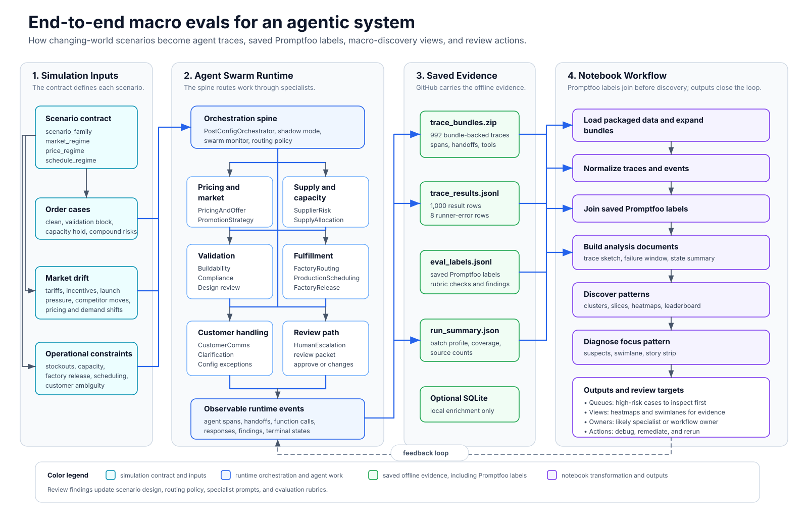

When an agentic system fails, the problem is often larger than a single bad response. A handoff may happen too late, a specialist agent may miss the same signal across many runs, or a review process may trigger for the wrong class of cases. To improve the system, teams need to see recurring behavior across the whole population of traces.
This cookbook walks through a macro-eval workflow for a multi-agent system. We use a synthetic EV order workflow where specialist agents handle pricing, compliance, supply, factory routing, scheduling, and release decisions while market and operational conditions change.
The notebook uses precomputed synthetic traces and saved lower-level eval labels, so you can run the full workflow without an OpenAI API key.
You will learn how to:
- Generate or collect many traced agent runs;
- Run lower-level evals on each completed run;
- Turn each trace into a compact document;
- Discover recurring behavior patterns across the population; and
- Drill into one high-impact pattern to find where a human should inspect the system next.
The goal is not to build a perfect taxonomy of every trace. The goal is to show how an AI engineering team can move from thousands of agent events to a small number of patterns that are understandable by both technical and business stakeholders.
End-to-End Agentic System Map

The key idea is that the notebook evaluates a saved agentic system, not a generic chat transcript. Scenario inputs drive an orchestrated specialist swarm, the runtime emits trace bundles, saved Promptfoo labels are joined to normalized traces, and the macro-eval layer turns that evidence into pattern and diagnosis views.
1. Why Macro Evals?
Evals are how AI teams measure whether a system is working. For a simple model call, an eval might compare one output against a rubric or reference answer. For an agentic system, we also need to evaluate whether the system used the right tools, delegated to the right specialist, paused for review when risk was high, and stayed grounded in the business context.
Multi-agent systems make this harder because a final answer is only the last event in a longer workflow. A release recommendation can look plausible while the trace reveals that the pricing agent ignored an incentive, the supply agent missed a stockout, or the orchestrator routed around a required review step.
This notebook separates the problem into two levels:
- Lower-level evals grade individual agents, handoffs, tools, and completed runs. In this example, Promptfoo stands in for that agent-level eval layer by grading whether a run handled final decision quality, policy correctness, specialist routing, market drift, and review appropriateness.
- Macro evals look across many lower-level findings. They ask: which kinds of problems repeat, where do they concentrate, and which part of the agent workflow should we inspect first?
We will use four reader-facing labels throughout the cookbook:
case_type: the generated business situation, such as a clean order, a validation block, a supplier substitution, or a pricing exception.run_outcome: how the run ended, such as completed, awaiting review, blocked, or failed.eval_finding: the lower-level signal that says what seemed wrong or risky.behavior_pattern: the recurring pattern discovered across many traces.
A useful mental model is: case_type is the setup, run_outcome is the ending, eval_finding is the local symptom, and behavior_pattern is the population-level pattern.
import sys
from pathlib import Path
if sys.version_info < (3, 11):
raise RuntimeError("This notebook requires Python 3.11 or newer.")
if not Path("requirements.txt").is_file():
raise FileNotFoundError("requirements.txt must be in the same folder as this notebook.")
%pip install -q --upgrade pip setuptools wheel
%pip install -q --only-binary=:all: -r requirements.txtSetup and Data Materials
Install the dependencies, then load the offline dataset bundled with this example. The saved Promptfoo labels are part of the local data folder, so this notebook does not require a separate Promptfoo config, Promptfoo run artifact, or OpenAI API key.
Expected files:
data/trace_results.jsonl
data/run_summary.json
data/trace_bundles.zip
data/eval_labels.jsonltrace_bundles.zip is expanded automatically into a local cache the first time the notebook runs. A full SQLite trace snapshot can be placed at data/trace_snapshot.sqlite for optional enrichment, but it is not required for the end-to-end workflow.
If your data lives outside the example folder, set MACRO_EVALS_DATA_ROOT to that directory. If labels live separately, set MACRO_EVALS_LABELS_PATH.
from __future__ import annotations
import json
import os
import sqlite3
import sys
import warnings
import zipfile
from pathlib import Path
from time import perf_counter
from typing import Any
import numpy as np
import pandas as pd
import plotly.express as px
import plotly.graph_objects as go
from IPython.display import Markdown, display
pd.set_option("display.max_colwidth", 180)
pd.set_option("display.max_rows", 100)
warnings.filterwarnings("ignore", message="n_jobs value 1 overridden.*")
def find_example_root(start: Path | None = None) -> Path:
start = (start or Path.cwd()).resolve()
candidates = [start, *start.parents, start / "examples/partners/macro_evals_for_agentic_systems"]
for candidate in candidates:
if (candidate / "helpers/data_prep.py").is_file() and (candidate / "helpers/macro_eval_pipeline.py").is_file():
return candidate
raise FileNotFoundError("Could not locate the macro evals example root.")
EXAMPLE_ROOT = find_example_root()
HELPERS_ROOT = EXAMPLE_ROOT / "helpers"
if str(HELPERS_ROOT) not in sys.path:
sys.path.insert(0, str(HELPERS_ROOT))
from data_prep import add_public_label_columns, build_trace_documents, load_promptfoo_label_rows, normalize_bundle
from macro_eval_pipeline import (
drill_down_topic_root_causes,
pick_focus_topic,
plot_root_cause_story,
plot_suspect_leaderboard,
plot_topic_heatmap,
plot_topic_leaderboard,
plot_topic_scatter,
plot_trace_swimlane,
run_macro_discovery,
slice_topics_by_metadata,
)
def display_path(path: Path | None) -> str:
if path is None:
return "not found"
try:
return str(path.resolve().relative_to(EXAMPLE_ROOT))
except ValueError:
return str(path)
def as_path(value: str | Path) -> Path:
path = Path(value).expanduser()
return path if path.is_absolute() else EXAMPLE_ROOT / path
def unique_paths(paths: list[Path]) -> list[Path]:
seen: set[Path] = set()
unique: list[Path] = []
for path in paths:
resolved = path.resolve()
if resolved not in seen:
seen.add(resolved)
unique.append(resolved)
return unique
def find_material(label: str, names: list[str], *, kind: str = "file", required: bool = True) -> Path | None:
checked: list[Path] = []
for root in DATA_ROOTS:
for name in names:
if not name:
continue
candidate = as_path(name) if Path(name).expanduser().is_absolute() else root / name
checked.append(candidate)
if kind == "dir":
exists = candidate.is_dir() and any(candidate.glob("*.json"))
else:
exists = candidate.is_file()
if exists:
return candidate.resolve()
if required:
checked_text = "\n".join(f"- {display_path(path)}" for path in checked)
raise FileNotFoundError(f"Missing {label}. Checked:\n{checked_text}")
return None
def ensure_trace_bundle_dir(bundle_dir: Path | None, bundle_zip: Path | None) -> Path:
if bundle_dir is not None:
return bundle_dir
if bundle_zip is None:
raise FileNotFoundError("Missing trace bundles. Expected data/trace_bundles/ or data/trace_bundles.zip.")
cache_dir = bundle_zip.parent / ".macro_eval_cache" / "trace_bundles"
marker = cache_dir / ".extracted_from_trace_bundles_zip"
if not marker.is_file() or not any(cache_dir.glob("*.json")):
cache_dir.mkdir(parents=True, exist_ok=True)
with zipfile.ZipFile(bundle_zip) as archive:
for member in archive.infolist():
if member.is_dir() or not member.filename.endswith(".json"):
continue
(cache_dir / Path(member.filename).name).write_bytes(archive.read(member))
marker.write_text(str(bundle_zip.stat().st_mtime_ns), encoding="utf-8")
return cache_dir.resolve()
env_data_root = os.environ.get("MACRO_EVALS_DATA_ROOT")
DATA_ROOTS = unique_paths(
([as_path(env_data_root)] if env_data_root else [])
+ [
EXAMPLE_ROOT / "data",
]
)
RESULTS_PATH = find_material("trace results", ["trace_results.jsonl", "metadata/results.jsonl", "results.jsonl"])
SUMMARY_PATH = find_material("run summary", ["run_summary.json", "metadata/summary.json", "summary.json"])
SQLITE_PATH = find_material("optional trace snapshot", ["trace_snapshot.sqlite"], required=False)
BUNDLE_ZIP_PATH = find_material("trace bundle archive", ["trace_bundles.zip", "bundles.zip"], required=False)
BUNDLE_DIR = ensure_trace_bundle_dir(find_material("trace bundles", ["trace_bundles", "bundles"], kind="dir", required=False), BUNDLE_ZIP_PATH)
PROGRESS_PATH = find_material("run progress", ["run_progress.json", "metadata/progress.json", "progress.json"], required=False)
PROMPTFOO_LABELS_PATH = find_material(
"lower-level eval labels",
[
os.environ.get("MACRO_EVALS_LABELS_PATH", ""),
"eval_labels.jsonl",
"metadata/eval_labels.jsonl",
],
required=False,
)
DATA_ROOT = next((root for root in DATA_ROOTS if RESULTS_PATH.is_relative_to(root)), DATA_ROOTS[0])
TRACE_LIMIT = int(os.environ.get("MACRO_EVALS_TRACE_LIMIT", "0")) or None
DISCOVERY_DOC_COLUMN = "doc_structured_summary"
DISCOVERY_MIN_CLUSTER_SIZE = int(os.environ.get("MACRO_EVALS_DISCOVERY_MIN_CLUSTER_SIZE", "24"))
RANDOM_STATE = 42
resolved_paths_df = pd.DataFrame(
[
("Trace results", RESULTS_PATH),
("Run summary", SUMMARY_PATH),
("Trace bundle archive", BUNDLE_ZIP_PATH),
("Expanded trace bundles", BUNDLE_DIR),
("Optional trace snapshot", SQLITE_PATH),
("Run progress", PROGRESS_PATH),
("Lower-level eval labels", PROMPTFOO_LABELS_PATH),
],
columns=["material", "path"],
)
resolved_paths_df["path"] = resolved_paths_df["path"].map(display_path)
display(Markdown("### Data materials"))
display(resolved_paths_df)
display(Markdown(f"Example root: `{display_path(EXAMPLE_ROOT)}` \nData root: `{display_path(DATA_ROOT)}`"))2. The Simulation: Automotive Orders in a Changing World
The simulated business is an EV order and post-configuration workflow. A customer has chosen a vehicle configuration, and the company needs to decide whether the order can proceed as-is, needs adjustment, should be rerouted, requires substitution, or should pause for review.
The simulation includes the kinds of constraints that make real automotive fulfillment hard:
- component availability and supplier substitution;
- factory capacity and production scheduling;
- pricing exceptions, promotions, and incentives;
- tariffs and dated market signals;
- regional compliance constraints;
- customer clarification and escalation paths;
- release review thresholds for risky or ambiguous cases.
The agent swarm is organized around those business responsibilities. An orchestrator receives the order and current environment, then delegates to specialists such as validation, supply risk, procurement planning, capacity balancing, factory routing, market intelligence, pricing, compliance, customer communications, and release review.
This maps naturally to the OpenAI Agents SDK. In the SDK, an agent is the core unit of a workflow: it packages a model, instructions, and optional runtime behavior such as tools, handoffs, guardrails, and structured outputs. The simulation follows that pattern:
- specialized agents package the instructions and tools for one part of the decision;
- handoffs let the orchestrator delegate to another specialist agent instead of stuffing every responsibility into one prompt;
- function tools expose order data, environment signals, and approval markers through structured inputs and outputs;
- guardrails and review thresholds represent validation, blocking, and human-review flows for risky or ambiguous cases;
- structured outputs make downstream grading and aggregation possible;
- traces preserve structured records of model calls, tool calls, handoffs, guardrails, and custom spans for debugging and macro-level analysis.
The low-level evals later in the notebook are grounded in this simulation story. If the case type says there is a supplier substitution under tariff pressure, the trace should show awareness of supply, policy, market, and review risk. If the case type is clean, unnecessary escalation is itself a finding.
def read_json(path: Path) -> dict[str, Any]:
return json.loads(path.read_text(encoding="utf-8"))
def read_jsonl(path: Path) -> list[dict[str, Any]]:
return [json.loads(line) for line in path.read_text(encoding="utf-8").splitlines() if line.strip()]
def result_run_id(row: dict[str, Any]) -> str | None:
if row.get("run_id"):
return str(row["run_id"])
if row.get("bundle_path"):
return Path(str(row["bundle_path"])).stem
return None
def sqlite_table_counts(db_path: Path | None) -> pd.DataFrame:
tables = [
"runs",
"configs",
"traces",
"trace_events",
"spans",
"review_packets",
"environment_events",
"environment_decisions",
]
if db_path is None:
return pd.DataFrame([{"table": table, "row_count": 0} for table in tables])
with sqlite3.connect(db_path) as conn:
existing_tables = {
row[0]
for row in conn.execute("select name from sqlite_master where type = 'table'")
}
rows = [
{
"table": table,
"row_count": conn.execute(f"select count(*) from {table}").fetchone()[0] if table in existing_tables else 0,
}
for table in tables
]
return pd.DataFrame(rows)
def load_sqlite_runs(db_path: Path | None) -> pd.DataFrame:
if db_path is None:
return pd.DataFrame()
summary_fields = [
"scenario_family",
"validation_outcome",
"review_status",
"review_decision",
"triage_outcome",
"market_regime",
"price_regime",
"schedule_regime",
"agent_version_set",
"orchestrator_mode",
"rogue_window_id",
"factory_release_state",
"trace_family",
"loop_count",
"retry_count",
"arbitration_count",
"compound_issue_count",
"specialist_activations",
"environment_event_ids",
"findings",
"failure_agent",
"error_code",
"error_message",
]
rows = []
with sqlite3.connect(db_path) as conn:
for row in conn.execute("select run_id, config_id, trace_id, status, terminal_state, started_at, ended_at, summary_json from runs"):
run_id, config_id, trace_id, status, terminal_state, started_at, ended_at, summary_json = row
summary = json.loads(summary_json or "{}")
item = {field: summary.get(field) for field in summary_fields}
item.update(
{
"run_id": run_id,
"config_id": config_id,
"trace_id": trace_id,
"sqlite_status": status,
"sqlite_terminal_state": terminal_state,
"started_at": started_at,
"ended_at": ended_at,
}
)
rows.append(item)
runs = pd.DataFrame(rows)
if runs.empty:
return runs
runs["started_at"] = pd.to_datetime(runs["started_at"], utc=True, errors="coerce")
runs["ended_at"] = pd.to_datetime(runs["ended_at"], utc=True, errors="coerce")
runs["findings_count_sqlite"] = runs["findings"].apply(lambda value: len(value or []))
runs["specialist_activation_count_sqlite"] = runs["specialist_activations"].apply(lambda value: len(value or []))
runs["environment_event_count_sqlite"] = runs["environment_event_ids"].apply(lambda value: len(value or []))
return runs
batch_summary = read_json(SUMMARY_PATH)
results_rows = read_jsonl(RESULTS_PATH)
sqlite_runs_df = load_sqlite_runs(SQLITE_PATH)
table_counts_df = sqlite_table_counts(SQLITE_PATH)
result_ids = {rid for row in results_rows if (rid := result_run_id(row))}
bundle_ids = {path.stem for path in BUNDLE_DIR.glob("*.json")}
missing_result_rows = [row for row in results_rows if result_run_id(row) is None]
def table_count(table_name: str) -> int:
rows = table_counts_df.loc[table_counts_df["table"].eq(table_name), "row_count"]
return int(rows.iloc[0]) if not rows.empty else 0
dataset_profile_df = pd.DataFrame(
[
("requested_batch_size", batch_summary.get("batch_size") or batch_summary.get("requested_runs")),
("results_rows", len(results_rows)),
("bundle_backed_result_rows", len(result_ids)),
("runner_error_rows_without_bundle", len(missing_result_rows)),
("bundle_files_available", len(bundle_ids)),
("bundle_files_not_in_results", len(bundle_ids - result_ids)),
("saved_promptfoo_label_rows", len(read_jsonl(PROMPTFOO_LABELS_PATH)) if PROMPTFOO_LABELS_PATH else 0),
("sqlite_available", SQLITE_PATH is not None),
("sqlite_runs", len(sqlite_runs_df)),
("sqlite_trace_events", table_count("trace_events")),
("sqlite_spans", table_count("spans")),
],
columns=["metric", "value"],
)
display(dataset_profile_df)
if SQLITE_PATH is not None:
display(table_counts_df)
if missing_result_rows:
display(Markdown(
f"The batch has `{len(results_rows):,}` result rows, but `{len(missing_result_rows):,}` ended before a bundle was written. "
f"The macro analysis therefore focuses on the `{len(result_ids):,}` bundle-backed traces that can be normalized and graded retrospectively."
))
if SQLITE_PATH is None:
display(Markdown(
"This packaged version omits the large SQLite mirror. The notebook uses the JSONL result rows, trace bundles, and saved Promptfoo labels for the end-to-end workflow."
))What One Bundle Represents
In this notebook, a bundle is the evidence packet for one simulated customer-order interaction.
Imagine one customer has configured an EV and the business needs to decide what to do next. The swarm receives that order plus the current operating world: supply constraints, factory capacity, promotions, incentives, tariffs, competitor pressure, and review thresholds. The agents then route work through specialists and produce a final state. The bundle is everything we need to audit that interaction afterward.
A bundle matters because macro evals need the workflow evidence behind the final answer. They need to know which agents were consulted, which tools were called, which environment signals were active, whether review was required, and where the workflow changed direction. With that evidence, we can move from “what happened in this one run?” to “which workflow patterns repeat across many runs?”
def bundle_path_for_result(result_row: dict[str, Any]) -> Path | None:
raw = result_row.get("bundle_path")
if not raw:
return None
return BUNDLE_DIR / Path(str(raw)).name
def bundle_event_counts(bundle: dict[str, Any]) -> dict[str, int]:
events = bundle.get("events") or []
spans = bundle.get("spans") or []
event_types = pd.Series([event.get("event_type") or "unknown" for event in events])
span_types = pd.Series([span.get("span_type") or "unknown" for span in spans])
agents = {
event.get("agent_name")
for event in events
if event.get("agent_name")
} | {
span.get("agent_name")
for span in spans
if span.get("agent_name")
}
return {
"events": len(events),
"spans": len(spans),
"handoffs": int(event_types.eq("handoff").sum() + span_types.eq("handoff").sum()),
"tool_or_function_calls": int(event_types.eq("function").sum() + span_types.eq("function").sum()),
"status_updates": int(event_types.eq("status").sum()),
"unique_agents_seen": len(agents),
"environment_signals": len(bundle.get("environment_events") or []),
"has_review_packet": int(bool(bundle.get("review_packet"))),
}
def human_event_type(value: str) -> str:
cleaned = str(value or "").replace("product_launch", "product_launch")
return cleaned.replace("_", " ")
bundle_rows = []
sample_bundle = None
sample_result_row = None
for result_row in results_rows:
bundle_path = bundle_path_for_result(result_row)
if bundle_path is None or not bundle_path.is_file():
continue
bundle = read_json(bundle_path)
counts = bundle_event_counts(bundle)
counts["run_id"] = result_run_id(result_row)
counts["case_type"] = result_row.get("scenario_family")
counts["final_status"] = result_row.get("final_status") or result_row.get("status")
counts["review_status"] = result_row.get("review_status")
bundle_rows.append(counts)
if sample_bundle is None and result_row.get("scenario_family") != "clean_simple":
sample_bundle = bundle
sample_result_row = result_row
bundle_profile_df = pd.DataFrame(bundle_rows)
typical_bundle_df = pd.DataFrame(
[
("analyzable customer-order interactions", len(bundle_profile_df), "One completed trace bundle per simulated order interaction."),
("median normalized events per interaction", int(bundle_profile_df["events"].median()), "Status updates, handoffs, function/tool events, responses, and findings."),
("median SDK spans per interaction", int(bundle_profile_df["spans"].median()), "Lower-level SDK trace spans behind the event log."),
("median handoff records per interaction", int(bundle_profile_df["handoffs"].median()), "Delegations between orchestrator and specialist agents."),
("median tool/function calls per interaction", int(bundle_profile_df["tool_or_function_calls"].median()), "Structured reads, checks, and evaluation calls inside the run."),
("median agents observed per interaction", int(bundle_profile_df["unique_agents_seen"].median()), "How many specialist roles appear in a typical trace."),
("median environment signals per interaction", int(bundle_profile_df["environment_signals"].median()), "Tariff, incentive, stockout, promotion, competitor, launch, or schedule signals active for the order."),
("interactions with review packets", int(bundle_profile_df["has_review_packet"].sum()), "Runs where the simulated business process produced a review artifact."),
],
columns=["reader_metric", "value", "plain_english_meaning"],
)
display(typical_bundle_df)
bundle_anatomy_df = pd.DataFrame(
[
("run", "Run id, trace id, terminal state, batch metadata, and synthetic order context.", "Lets us join one interaction across tables and understand its business setup."),
("events", "A normalized event log: status updates, handoffs, tool/function activity, responses, and findings.", "This is the main evidence stream used for trace documents and AgentTrace-style diagnosis."),
("spans", "OpenAI Agents SDK trace spans for handoffs, function calls, responses, and timing.", "Gives lower-level execution structure behind the event log."),
("environment_events", "The dated world state active for the order: tariffs, incentives, stockouts, promotions, competitor pressure, launches, and schedule/capacity signals.", "Lets evals check whether the swarm reacted to the world it was given."),
("review_packet", "A simulated review artifact with findings, recommended action, allowed actions, and review status.", "Lets us evaluate whether escalation or review was appropriate."),
("snapshots", "Optional inventory, capacity, and environment snapshots.", "Provides operational context when a case depends on supply or scheduling."),
],
columns=["bundle_part", "what_it_contains", "why_it_matters_for_macro_evals"],
)
display(bundle_anatomy_df)if sample_bundle is not None and sample_result_row is not None:
run_config = (sample_bundle.get("run") or {}).get("config") or {}
metadata = run_config.get("metadata") or {}
generation = metadata.get("generation_params") or {}
customer = run_config.get("customer") or {}
active_event_types = sorted({human_event_type(value) for value in generation.get("active_event_types") or []})
specialists = sample_result_row.get("specialist_activations") or generation.get("specialist_activations") or []
review_packet = sample_bundle.get("review_packet") or {}
example_interaction_df = pd.DataFrame(
[
("what the interaction represents", "One synthetic customer order moving through the post-configuration workflow."),
("case_type", sample_result_row.get("scenario_family")),
("synthetic customer region", customer.get("region") or "not recorded"),
("business issue cluster", generation.get("issue_cluster") or sample_result_row.get("scenario")),
("active world signals", ", ".join(active_event_types[:8]) + (" ..." if len(active_event_types) > 8 else "")),
("specialists activated", ", ".join(map(str, specialists[:8])) + (" ..." if len(specialists) > 8 else "")),
("final status", sample_result_row.get("final_status") or sample_result_row.get("status")),
("review status", sample_result_row.get("review_status") or review_packet.get("status") or "not recorded"),
("event evidence", f"{len(sample_bundle.get('events') or []):,} events and {len(sample_bundle.get('spans') or []):,} SDK spans"),
],
columns=["field", "example_value"],
)
display(example_interaction_df)How to Read the Dataset Profile
The dataset profile tells us the scale and texture of the simulated business process we are about to evaluate. Each analyzable row is one customer-order interaction with enough trace evidence to reconstruct what the agent swarm saw, which specialists it consulted, and how the workflow ended.
The generated batch asked the swarm to handle 1,000 synthetic order interactions. For 992 of them, we have a bundle: a complete evidence packet for grading the run, building a trace document, clustering it with similar runs, and inspecting the agent path afterward. That gives us a large enough population to look for repeated behavior while still retaining the trace detail needed to explain individual examples.
The typical bundle is a structured record of a simulated business process: the order setup, active world events, specialist handoffs, tool/function activity, review artifacts, and terminal state. That is why this dataset can support macro evals. We can evaluate individual decisions, and we can also ask whether repeated workflow patterns emerge across hundreds of rich interaction records.
scenario_counts_df = (
pd.DataFrame(results_rows)
.assign(case_type=lambda df: df["scenario_family"].fillna("unknown"))
.groupby("case_type", as_index=False)
.size()
.rename(columns={"size": "run_count"})
.sort_values("run_count", ascending=False)
)
fig = px.bar(
scenario_counts_df,
x="run_count",
y="case_type",
orientation="h",
title="Synthetic simulation coverage by generated case type",
text="run_count",
color="run_count",
color_continuous_scale="Teal",
)
fig.update_layout(height=max(420, 28 * len(scenario_counts_df)), margin=dict(l=20, r=20, t=60, b=30))
fig.update_yaxes(title="", categoryorder="total ascending")
fig.update_xaxes(title="Run count")
fig.show()
display(scenario_counts_df.head(15))What case_type Means
A case_type is a scenario label from the generator. It describes the kind of business situation the swarm was asked to handle before any eval or clustering has happened.
Examples from this dataset include:
clean_simple: a relatively straightforward order where the correct behavior is usually to complete without unnecessary review.validation_block_simple: a configuration has a validation issue, so the swarm should avoid overconfident release.supplier_substitution_compound: component availability creates a substitution decision, often with downstream routing and scheduling implications.pricing_exception_compound: pricing, incentives, or margin policy need specialist review.regional_compliance_compound: the order needs regional policy or compliance handling.
The bar chart above is a coverage view. It shows whether the simulation produced enough variety to evaluate the swarm under different business pressures. A strong macro-eval dataset needs both ordinary cases and pressure cases, because recurring patterns only become meaningful when we can compare behavior across different setups.
CASE_TYPE_DESCRIPTIONS = {
"clean_simple": "Straightforward order; should usually complete with minimal routing.",
"validation_block_simple": "Configuration or buildability issue; should avoid unsupported release.",
"release_block_simple": "Release readiness is blocked; should defer or request review.",
"capacity_hold_simple": "Factory capacity or scheduling pressure; should route to fulfillment planning.",
"pricing_exception_compound": "Pricing, incentives, margin, or tariff pressure; should involve pricing/policy owners.",
"escalation_resume_compound": "An escalation or review flow needs to resume cleanly.",
"supplier_substitution_compound": "Supplier availability forces substitution or procurement planning.",
"regional_compliance_compound": "Regional compliance or policy constraints affect release.",
"clarification_needed_compound": "Customer intent or configuration details are ambiguous.",
"schedule_incentive_compound": "Timing, scheduling, and incentive windows interact.",
"tradeoff_recommended_compound": "The system should weigh competing business tradeoffs.",
"dual_failure_recovery_compound": "Multiple failures require coordinated recovery.",
"ambiguous_customer_intent_compound": "The customer request is underspecified or conflicting.",
"conflicting_multi_agent_compound": "Specialists may surface conflicting recommendations.",
}
case_type_guide_df = scenario_counts_df.copy()
case_type_guide_df["plain_english"] = case_type_guide_df["case_type"].map(CASE_TYPE_DESCRIPTIONS).fillna(
"Generated scenario type from the synthetic simulation."
)
display(case_type_guide_df.head(12))The table above turns the generator labels into business language. This is important because the same later pattern can mean different things depending on the setup. A fulfillment reroute in a supplier substitution case may be desirable. The same reroute in a clean case might be unnecessary complexity.
3. Lower-Level Agent Evals with Promptfoo
A mature multi-agent system should not rely on final-answer inspection alone. Each launched agent usually needs its own evals: did this specialist use the right evidence, call the right tools, respect policy, hand off at the right time, and produce an output that the rest of the system can trust?
Promptfoo plays that role in this notebook. It represents the lower-level eval layer that would normally live beside the agents in a production workflow. In a live system, some of these checks might run online, some might run asynchronously, and some might be sampled for human review. The implementation detail matters less than the contract: every run should carry eval signals that say what looked correct, risky, or wrong at the agent and workflow level.
In this dataset, Promptfoo grades completed traces with questions that mirror the kinds of agent-level evals teams build for real systems:
- Did the final decision follow from the active issue?
- Did the system respect pricing, tariff, incentive, regional, and policy constraints?
- Did the orchestrator activate the specialists implied by the case?
- Did the run respond to dated market signals rather than acting as if the world were static?
- Was review or escalation proportionate to the risk?
These checks produce eval_finding. A failing lower-level eval is a local signal: one trace, one rubric, one symptom. The macro-eval sections later ask what those local signals become at population scale. Do they scatter randomly, or do they reveal repeated behavior patterns that point to a specific agent, handoff, tool, or business policy?
PROMPTFOO_RUBRICS = [
("final_decision_quality", "Final decision is supported by the active issues, terminal state, and agent outputs."),
("policy_compliance_correctness", "Policy, tariff, incentive, and regional compliance context is handled correctly."),
("routing_specialist_activation", "Specialist routing matches the issues present in the bundle."),
("market_drift_awareness", "Changing market conditions and dated environment signals are noticed."),
("review_appropriateness", "Review and escalation behavior is proportionate to the case risk."),
]
PROMPTFOO_ASSERTION_FALLBACK = {
f"assertion_{idx}": metric for idx, (metric, _) in enumerate(PROMPTFOO_RUBRICS, start=1)
}
def clean_metric_name(value: Any) -> str | None:
if value is None or (isinstance(value, float) and pd.isna(value)):
return None
text = str(value)
return PROMPTFOO_ASSERTION_FALLBACK.get(text, text)
def clean_metric_list(values: Any) -> list[str]:
if not isinstance(values, list):
return []
return [metric for item in values if (metric := clean_metric_name(item))]
def clean_metric_dict(values: Any) -> dict[str, Any]:
if not isinstance(values, dict):
return {}
return {clean_metric_name(key) or str(key): value for key, value in values.items()}
def clean_promptfoo_labels(labels_df: pd.DataFrame) -> pd.DataFrame:
if labels_df.empty:
return labels_df
cleaned = labels_df.copy()
# Accept older draft label files that used metric/passed/score/reason columns.
if "promptfoo_pass" not in cleaned.columns and "passed" in cleaned.columns:
cleaned["promptfoo_pass"] = cleaned["passed"]
if "promptfoo_failed_checks" not in cleaned.columns:
if "metric" in cleaned.columns:
cleaned["promptfoo_failed_checks"] = cleaned.apply(
lambda row: [] if bool(row.get("promptfoo_pass", True)) else [row.get("metric")],
axis=1,
)
else:
cleaned["promptfoo_failed_checks"] = [[] for _ in range(len(cleaned))]
if "promptfoo_score_mean" not in cleaned.columns and "score" in cleaned.columns:
cleaned["promptfoo_score_mean"] = cleaned["score"]
if "promptfoo_primary_finding" not in cleaned.columns:
if "metric" in cleaned.columns:
cleaned["promptfoo_primary_finding"] = cleaned.apply(
lambda row: None if bool(row.get("promptfoo_pass", True)) else row.get("metric"),
axis=1,
)
else:
cleaned["promptfoo_primary_finding"] = None
if "promptfoo_check_scores" not in cleaned.columns:
cleaned["promptfoo_check_scores"] = cleaned.apply(
lambda row: {row.get("metric", "unknown"): row.get("score")} if "score" in cleaned.columns else {},
axis=1,
)
if "promptfoo_rationales" not in cleaned.columns:
cleaned["promptfoo_rationales"] = cleaned.apply(
lambda row: {row.get("metric", "unknown"): row.get("reason")} if "reason" in cleaned.columns else {},
axis=1,
)
cleaned["promptfoo_pass"] = cleaned["promptfoo_pass"].astype("boolean")
cleaned["promptfoo_primary_finding"] = cleaned["promptfoo_primary_finding"].apply(clean_metric_name)
cleaned["promptfoo_failed_checks"] = cleaned["promptfoo_failed_checks"].apply(clean_metric_list)
cleaned["promptfoo_check_scores"] = cleaned["promptfoo_check_scores"].apply(clean_metric_dict)
cleaned["promptfoo_rationales"] = cleaned["promptfoo_rationales"].apply(clean_metric_dict)
return cleaned
rubric_df = pd.DataFrame(PROMPTFOO_RUBRICS, columns=["rubric", "plain_english_question"])
display(rubric_df)
promptfoo_labels_df = clean_promptfoo_labels(load_promptfoo_label_rows(PROMPTFOO_LABELS_PATH))
if promptfoo_labels_df.empty:
display(Markdown("No Promptfoo labels were found. The notebook will continue with deterministic review and runtime signals only."))
else:
pass_counts_df = (
promptfoo_labels_df["promptfoo_pass"]
.map({True: "pass", False: "fail"})
.fillna("unknown")
.value_counts()
.rename_axis("promptfoo_result")
.reset_index(name="trace_count")
)
display(Markdown(f"Loaded `{len(promptfoo_labels_df):,}` Promptfoo label rows from `{display_path(PROMPTFOO_LABELS_PATH)}`."))
display(pass_counts_df)
fig = px.pie(
pass_counts_df,
names="promptfoo_result",
values="trace_count",
title="Promptfoo grading result across bundle-backed traces",
color="promptfoo_result",
color_discrete_map={"pass": "#4daf4a", "fail": "#e41a1c", "unknown": "#999999"},
hole=0.45,
)
fig.update_traces(textposition="inside", textinfo="percent+label")
fig.show()
failed_metric_df = (
promptfoo_labels_df.explode("promptfoo_failed_checks")
.dropna(subset=["promptfoo_failed_checks"])
.groupby("promptfoo_failed_checks", as_index=False)
.size()
.rename(columns={"promptfoo_failed_checks": "rubric", "size": "failed_trace_count"})
.sort_values("failed_trace_count", ascending=False)
)
display(failed_metric_df)
if not failed_metric_df.empty:
fig = px.bar(
failed_metric_df,
x="failed_trace_count",
y="rubric",
orientation="h",
title="Which lower-level rubric failed most often?",
text="failed_trace_count",
color="failed_trace_count",
color_continuous_scale="Reds",
)
fig.update_layout(height=360, margin=dict(l=20, r=20, t=60, b=30))
fig.update_yaxes(title="", categoryorder="total ascending")
fig.update_xaxes(title="Failed traces")
fig.show()Interpreting the Promptfoo Outputs
The pie chart is the simplest lower-level scorecard: it separates traces that passed all rubric checks from traces with at least one failed check. In a live multi-agent system, this is the kind of layer that tells us which runs deserve attention before we do any macro analysis.
The failed-rubric bar chart answers a more useful question: which kinds of agent or workflow concerns appear most often? For this dataset, final decision quality is the dominant lower-level finding, while policy correctness, review appropriateness, and market-drift awareness also appear. That suggests the macro layer should focus less on isolated syntax errors and more on repeated decision-making patterns.
This is the bridge to macro evals. Promptfoo gives each trace local eval labels. The rest of the notebook asks how those labels organize across the whole population. In other words: agent-level evals create the raw signal, and macro evals turn many such signals into a map of recurring system behavior.
4. Build the Analysis Dataset
Now we normalize the run bundles into two analysis tables:
traces_df: one row per run, with metadata, outcome, findings, and document fields.events_df: one row per normalized trace event, including handoffs, tool calls, status events, model responses, and review/finding markers.
We also build trace documents. The document is the modeling object that the BERTopic-style section will cluster. The notebook uses doc_structured_summary because it is compact but still preserves scenario, routing, state transitions, handoffs, findings, and terminal state.
The public analysis path is:
case_type -> run_outcome -> eval_finding -> behavior_pattern
The first three labels are known before clustering. The fourth appears after discovery.
OUTCOME_GROUP_MAP = {
"completed": "successful_completion",
"awaiting_review": "review_escalation",
"blocked": "hard_failure",
"failed": "hard_failure",
}
SEVERITY_BY_OUTCOME = {
"successful_completion": ("low", 1.0),
"review_escalation": ("medium", 2.0),
"in_progress": ("medium", 1.5),
"blocked": ("high", 2.5),
"hard_failure": ("high", 3.0),
}
def local_bundle_path(result_row: dict[str, Any]) -> Path:
return BUNDLE_DIR / Path(str(result_row["bundle_path"])).name
def load_normalized_bundle_tables(results: list[dict[str, Any]], limit: int | None = None) -> tuple[pd.DataFrame, pd.DataFrame]:
selected_rows = [row for row in results if result_run_id(row) and row.get("bundle_path")]
if limit is not None:
selected_rows = selected_rows[:limit]
normalized = []
for record_index, result_row in enumerate(selected_rows, start=1):
bundle_path = local_bundle_path(result_row)
if not bundle_path.is_file():
continue
bundle = read_json(bundle_path)
normalized.append(normalize_bundle(bundle, result_row, record_index, bundle_path))
trace_rows = [trace_row for trace_row, _ in normalized]
event_rows = [event for _, trace_events in normalized for event in trace_events]
traces = pd.DataFrame(trace_rows)
events = pd.DataFrame(event_rows)
if not events.empty:
events["ts"] = pd.to_datetime(events["ts"], utc=True, errors="coerce")
events["ended_at"] = pd.to_datetime(events["ended_at"], utc=True, errors="coerce")
events = events.sort_values(["trace_id", "sequence_index", "ts", "event_id"]).reset_index(drop=True)
return traces, events
load_started = perf_counter()
traces_df, events_df = load_normalized_bundle_tables(results_rows, limit=TRACE_LIMIT)
print(f"Loaded {len(traces_df):,} normalized traces and {len(events_df):,} normalized events in {perf_counter() - load_started:.1f}s.")
result_metadata_cols = [
"run_id",
"market_regime",
"price_regime",
"schedule_regime",
"agent_version_set",
"orchestrator_mode",
"rogue_window_id",
"factory_release_state",
"trace_family",
"specialist_activations",
"environment_event_ids",
]
result_metadata_df = pd.DataFrame(results_rows)
result_metadata_cols = [column for column in result_metadata_cols if column in result_metadata_df.columns]
if "run_id" in result_metadata_cols:
traces_df = traces_df.merge(
result_metadata_df[result_metadata_cols].drop_duplicates(subset=["run_id"]),
on="run_id",
how="left",
suffixes=("", "_result"),
)
for column in result_metadata_cols:
if column == "run_id":
continue
result_col = f"{column}_result"
if result_col in traces_df.columns:
traces_df[column] = traces_df[column].combine_first(traces_df[result_col]) if column in traces_df.columns else traces_df[result_col]
traces_df = traces_df.drop(columns=[result_col])
for column, default in {
"market_regime": "unknown",
"price_regime": "unknown",
"schedule_regime": "unknown",
"agent_version_set": "unknown",
"orchestrator_mode": "unknown",
}.items():
if column not in traces_df.columns:
traces_df[column] = default
sqlite_enrichment_cols = [
"run_id",
"sqlite_status",
"sqlite_terminal_state",
"scenario_family",
"validation_outcome",
"review_status",
"review_decision",
"triage_outcome",
"market_regime",
"price_regime",
"schedule_regime",
"agent_version_set",
"orchestrator_mode",
"rogue_window_id",
"factory_release_state",
"trace_family",
"loop_count",
"retry_count",
"arbitration_count",
"compound_issue_count",
"findings_count_sqlite",
]
if not sqlite_runs_df.empty:
traces_df = traces_df.merge(sqlite_runs_df[sqlite_enrichment_cols], on="run_id", how="left", suffixes=("", "_sqlite"))
for column in [
"scenario_family",
"validation_outcome",
"review_status",
"review_decision",
"triage_outcome",
"market_regime",
"price_regime",
"schedule_regime",
"agent_version_set",
"orchestrator_mode",
"rogue_window_id",
"factory_release_state",
"trace_family",
"loop_count",
"retry_count",
"arbitration_count",
"compound_issue_count",
]:
sqlite_col = f"{column}_sqlite"
if sqlite_col in traces_df.columns:
traces_df[column] = traces_df[sqlite_col].combine_first(traces_df.get(column))
traces_df = traces_df.drop(columns=[sqlite_col])
traces_df["runtime_status"] = traces_df["sqlite_status"].combine_first(traces_df["runtime_status"])
traces_df["terminal_state"] = traces_df["sqlite_terminal_state"].combine_first(traces_df["terminal_state"])
traces_df["findings_count"] = traces_df["findings_count_sqlite"].combine_first(traces_df["findings_count"]).fillna(0)
else:
traces_df["findings_count"] = traces_df.get("findings_count", pd.Series(0, index=traces_df.index)).fillna(0)
traces_df["outcome_group"] = traces_df["runtime_status"].map(OUTCOME_GROUP_MAP).fillna("unknown")
traces_df["severity_label"] = traces_df["outcome_group"].map(lambda value: SEVERITY_BY_OUTCOME.get(value, ("medium", 2.0))[0])
traces_df["severity_weight"] = traces_df["outcome_group"].map(lambda value: SEVERITY_BY_OUTCOME.get(value, ("medium", 2.0))[1])
traces_df["has_failure"] = (
traces_df["outcome_group"].ne("successful_completion")
| traces_df["validation_outcome"].fillna("passed").ne("passed")
| traces_df["findings_count"].fillna(0).gt(0)
)
traces_df["impact_score"] = (
traces_df["severity_weight"].fillna(1.0)
* (1.0 + traces_df["findings_count"].fillna(0))
* (1.0 + traces_df["loop_count"].fillna(0) / 4.0)
)
documents_df = build_trace_documents(traces_df, events_df)
traces_with_docs_df = traces_df.merge(documents_df, on="trace_id", how="left")
labeled_traces_df = add_public_label_columns(traces_with_docs_df, promptfoo_labels_df=promptfoo_labels_df)
labeled_traces_df["eval_finding"] = labeled_traces_df["eval_finding"].apply(lambda value: clean_metric_name(value) or "none")
labeled_traces_df["promptfoo_failed"] = labeled_traces_df.get("promptfoo_pass").eq(False)
analysis_profile_df = pd.DataFrame(
[
("normalized_traces", len(labeled_traces_df)),
("normalized_events", len(events_df)),
("case_types", labeled_traces_df["case_type"].nunique()),
("run_outcomes", labeled_traces_df["run_outcome"].nunique()),
("eval_findings", labeled_traces_df["eval_finding"].nunique()),
("promptfoo_failed_traces", int(labeled_traces_df["promptfoo_failed"].sum())),
("failure_or_review_traces", int(labeled_traces_df["has_failure"].sum())),
],
columns=["metric", "value"],
)
display(analysis_profile_df)
display(labeled_traces_df[["run_id", "case_type", "run_outcome", "eval_finding", "market_regime", "agent_version_set", "impact_score"]].head(10))Interpreting the Analysis Profile
The profile above confirms that the lower-level eval layer has joined onto the normalized trace population. The important numbers are:
- normalized traces: the bundle-backed population we can inspect;
- normalized events: the event-level evidence behind those traces;
- case types: the scenario coverage produced by the generator; and
- Promptfoo-failed or review/failure-bearing traces: the lower-level signal population most relevant for macro discovery.
The exact counts depend on whether you run the full notebook or set MACRO_EVALS_TRACE_LIMIT for a smoke test. The sample rows show how the notebook simplifies the raw data into readable labels. For example, a pricing_exception_compound case that ends in review with a final_decision_quality finding is now easy to follow through the rest of the notebook.
def humanize_label(value: Any, max_len: int = 48) -> str:
if value is None or (isinstance(value, float) and pd.isna(value)):
text = "missing"
else:
text = str(value)
text = text.replace("_", " ")
return text if len(text) <= max_len else text[: max_len - 3].rstrip() + "..."
def plot_label_sankey(frame: pd.DataFrame, columns: list[str], title: str, min_count: int = 1):
working = frame[columns].copy()
for column in columns:
working[column] = working[column].fillna("missing").astype(str)
node_labels: list[str] = []
node_lookup: dict[tuple[str, str], int] = {}
sources: list[int] = []
targets: list[int] = []
values: list[int] = []
def node_id(column: str, value: str) -> int:
key = (column, value)
if key not in node_lookup:
node_lookup[key] = len(node_labels)
node_labels.append(f"{column}: {humanize_label(value)}")
return node_lookup[key]
for left, right in zip(columns[:-1], columns[1:]):
pairs = working.groupby([left, right]).size().reset_index(name="count")
pairs = pairs[pairs["count"].ge(min_count)]
for _, row in pairs.iterrows():
sources.append(node_id(left, row[left]))
targets.append(node_id(right, row[right]))
values.append(int(row["count"]))
fig = go.Figure(
data=[
go.Sankey(
arrangement="snap",
node=dict(label=node_labels, pad=14, thickness=14),
link=dict(source=sources, target=targets, value=values),
)
]
)
fig.update_layout(title=title, height=620, margin=dict(l=20, r=20, t=60, b=20))
return fig
flow_sample_df = labeled_traces_df[["case_type", "run_outcome", "eval_finding"]].copy()
plot_label_sankey(
flow_sample_df,
["case_type", "run_outcome", "eval_finding"],
"Before clustering: generated case -> run outcome -> lower-level finding",
min_count=3,
).show()
label_crosswalk_df = (
labeled_traces_df.groupby(["case_type", "run_outcome", "eval_finding"], dropna=False)
.size()
.reset_index(name="trace_count")
.sort_values("trace_count", ascending=False)
.head(18)
)
display(label_crosswalk_df)What the First Sankey Plot Teaches
The first Sankey plot is a pre-clustering view. It shows how generated case types flow into run outcomes and lower-level findings.
Read it from left to right:
- wide bands from a
case_typemean that scenario appears often; - splits into
run_outcomeshow whether that scenario tends to complete, pause, block, or fail; - final bands into
eval_findingshow which lower-level rubric or runtime signal is attached.
This is already useful for a team. A business reader can ask whether the simulation produces the right kinds of pressure. An AI engineer can ask whether certain scenarios overproduce the same low-level finding. What it cannot yet answer is whether those findings represent the same underlying behavior pattern. That is why we cluster next.
Trace Documents: Turning Runs into Comparable Text
A raw agent trace is too detailed to cluster directly. It may contain hundreds of events, long model responses, tool payloads, and repeated status updates. The document construction step compresses each run into a comparable view while preserving the information that matters for macro evals.
A good trace document includes:
- the business setup (
case_type, selected route, active environment signals); - the run outcome and severity;
- the important handoffs and specialist activations;
- review/finding markers;
- a short state-transition digest.
The document view defines what the clustering algorithm is allowed to notice. Including agent handoffs helps the macro eval discover routing patterns. Including environment signals helps it discover market-drift failures. The quality of the trace document is therefore part of the evaluation design, not a mechanical cleanup step.
Failure and Focus-Event Glossary
The raw traces contain many event-level labels. To keep the notebook readable, we do not ask readers to learn all of them. The AgentTrace-style section mainly cares about focus events: visible moments in the trace where the system appears to require attention.
In this simulation, common focus-event signals include:
review finding: a review or validation surface recorded an issue.review requiredorawaiting_review: the run paused because the simulated business process required review.failedorblocked: the run reached a degraded terminal state.triage routeor reroute signals: the workflow changed direction because another owner needed to act.- tool warnings or policy markers: a structured tool output indicated risk, ambiguity, or a policy constraint.
These are observability signals, not proof of root cause. They tell the diagnosis pass where to anchor its backward search.
focus_event_guide_df = pd.DataFrame(
[
("review finding", "An issue was recorded by review, validation, or a grading surface.", "Start from this when the trace has an explicit finding."),
("review required / awaiting_review", "The simulated business process paused for review.", "Check whether review was justified by the active risk."),
("failed / blocked", "The run ended in a degraded terminal state.", "Walk backward to the last handoff, tool, or specialist decision."),
("triage route / reroute", "The workflow changed ownership or path.", "Inspect whether routing matched the case type and environment signals."),
("tool warning / policy marker", "A structured tool exposed risk or policy context.", "Check whether later decisions used or ignored that signal."),
],
columns=["focus_event_signal", "meaning", "how_to_use_it"],
)
display(focus_event_guide_df)example_candidates = labeled_traces_df[
labeled_traces_df["promptfoo_failed"].fillna(False)
& labeled_traces_df[DISCOVERY_DOC_COLUMN].fillna("").astype(str).str.len().gt(0)
]
if example_candidates.empty:
example_candidates = labeled_traces_df[labeled_traces_df[DISCOVERY_DOC_COLUMN].fillna("").astype(str).str.len().gt(0)]
example_row = example_candidates.sort_values("impact_score", ascending=False).iloc[0]
display(Markdown(
f"**Example trace document** \n"
f"`case_type={example_row['case_type']}` | `run_outcome={example_row['run_outcome']}` | "
f"`eval_finding={example_row['eval_finding']}` | `impact_score={example_row['impact_score']:.2f}`"
))
print(str(example_row[DISCOVERY_DOC_COLUMN])[:2400])The example document above is a single trace rendered as a compact narrative. It is intentionally denser than prose but easier to compare than a raw event log. When you adapt this workflow, spend real time on document construction. Better documents usually produce more useful behavior patterns than more complicated clustering settings.
5. BERTopic-Style Discovery
The discovery pass is inspired by the BERTopic family of methods. The high-level idea is modular:
- Represent each trace document as a vector. If the document for trace $i$ is $d_i$, the embedding model produces a vector $e_i = f(d_i)$.
- Reduce the vector geometry. A reducer such as UMAP maps $e_i$ to a lower-dimensional point $z_i$ that preserves useful local neighborhoods.
- Cluster dense regions. A density clusterer such as HDBSCAN groups nearby points and can mark outliers as noise.
- Represent each topic. For each cluster, compute terms that distinguish that cluster from the rest of the corpus.
This notebook uses the helper module to keep the implementation compact, but the major mathematical ideas are visible:
- A trace belongs to a cluster $k$ when its document vector is near other trace vectors in the reduced space.
- A term is useful for labeling cluster $k$ when it appears often inside $k$ and less often elsewhere.
- A simple class-aware term score is:
$$ score(t, k) = tf(t, k) \times \log\left(\frac{1 + N}{1 + df(t)}\right) $$
where $tf(t, k)$ is the term frequency for term $t$ inside cluster $k$, $df(t)$ is the number of clusters/documents where the term appears, and $N$ is the comparison population size. The exact implementation can vary, but the intuition is stable: labels should describe what makes a cluster distinctive.
Finally, we rank patterns by a triage metric:
$$ impact_score(k) = prevalence_share(k) \times severity_weighted_prevalence(k) $$
This is not a universal risk formula. It is a practical prioritization score: a pattern matters more when it is both common and severe.
discovery_input_df = labeled_traces_df.loc[
labeled_traces_df["has_failure"]
| labeled_traces_df["promptfoo_failed"].fillna(False)
| labeled_traces_df["run_outcome"].isin(["review_needed", "blocked", "runtime_error"])
].copy()
discovery_input_df = discovery_input_df.loc[
discovery_input_df[DISCOVERY_DOC_COLUMN].fillna("").astype(str).str.len().gt(0)
].copy()
if len(discovery_input_df) < 8:
broader_input_df = labeled_traces_df.loc[
labeled_traces_df[DISCOVERY_DOC_COLUMN].fillna("").astype(str).str.len().gt(0)
].copy()
if len(broader_input_df) > len(discovery_input_df):
display(Markdown(
"The current sample has very few failure/review traces, so discovery is broadened to all traces with documents."
))
discovery_input_df = broader_input_df
if len(discovery_input_df) < 2:
raise ValueError("Macro discovery needs at least two trace documents. Increase MACRO_EVALS_TRACE_LIMIT or run the full notebook.")
effective_min_cluster_size = min(DISCOVERY_MIN_CLUSTER_SIZE, max(2, len(discovery_input_df) // 4))
effective_n_neighbors = min(30, max(2, len(discovery_input_df) - 1))
print(f"Discovery input traces: {len(discovery_input_df):,}")
print(f"Discovery min_cluster_size: {effective_min_cluster_size}")
print(f"Discovery n_neighbors: {effective_n_neighbors}")
discovery_started = perf_counter()
discovery = run_macro_discovery(
discovery_input_df,
document_column=DISCOVERY_DOC_COLUMN,
min_cluster_size=effective_min_cluster_size,
n_neighbors=effective_n_neighbors,
top_n_terms=8,
random_state=RANDOM_STATE,
failure_only=False,
)
discovery_seconds = perf_counter() - discovery_started
topic_info_df = discovery.topic_info_df.copy()
work_df = discovery.trace_topic_df.copy()
work_df["behavior_pattern"] = work_df["topic_label"].fillna(work_df["topic_id"].astype(str))
topic_info_df["behavior_pattern"] = topic_info_df["topic_label"].fillna(topic_info_df["topic_id"].astype(str))
display(
pd.DataFrame(
[
("discovery_seconds", round(discovery_seconds, 2)),
("input_traces", len(discovery_input_df)),
("topics_including_noise", topic_info_df["topic_id"].nunique()),
("non_noise_patterns", int(topic_info_df["topic_id"].ne(-1).sum())),
],
columns=["metric", "value"],
)
)
display(
topic_info_df[
["topic_id", "behavior_pattern", "trace_count", "prevalence", "impact_score", "dominant_owner", "keywords_text"]
].sort_values("impact_score", ascending=False).head(12)
)Interpreting the Discovery Output
The discovery summary tells us how many traces were clustered and how many non-noise behavior patterns were recovered. We run discovery on the traces that already have failure, review, runtime, or Promptfoo signals because this cookbook is focused on where the system needs attention.
The topic table should be read as a triage board:
trace_countandprevalencetell us how often the pattern appears.severity_weighted_prevalencetells us how severe the traces in the pattern tend to be.impact_scorecombines prevalence and severity into a ranking.dominant_owneris a heuristic owner label, not an assignment.keywords_textgives the terms that made the pattern distinctive.
A high-impact behavior pattern is not automatically a defect. It is where a reviewer should look first because the pattern is frequent, consequential, or both.
impact_explanation_df = (
topic_info_df[topic_info_df["topic_id"].ne(-1)]
[["behavior_pattern", "trace_count", "prevalence", "severity_weighted_prevalence", "impact_score"]]
.sort_values("impact_score", ascending=False)
.head(8)
.copy()
)
impact_explanation_df["formula"] = "prevalence x severity_weighted_prevalence"
display(impact_explanation_df)The table above makes the impact score concrete. A pattern can rank highly because it appears in many traces, because it concentrates higher-severity traces, or both. In the automotive configurator setting, that helps separate a rare edge case from a recurring operational behavior that may affect many orders.
leaderboard_fig = plot_topic_leaderboard(topic_info_df[topic_info_df["topic_id"].ne(-1)].copy(), top_n=10)
leaderboard_fig.update_layout(title_text="Behavior patterns by weighted impact")
leaderboard_fig.show()
scatter_df = discovery.topic_assignments.copy()
if "topic_label" in scatter_df.columns:
scatter_df["behavior_pattern"] = scatter_df["topic_label"].fillna(scatter_df["topic_id"].astype(str))
scatter_fig = plot_topic_scatter(
scatter_df,
color_col="behavior_pattern",
hover_cols=("run_id", "case_type", "run_outcome", "eval_finding"),
title="Trace map after discovery",
)
scatter_fig.update_layout(legend_title_text="Behavior pattern")
scatter_fig.show()Interpreting the Leaderboard and Trace Map
The leaderboard is the portfolio view: it ranks behavior patterns by weighted impact. Use it to decide which pattern deserves human attention first.
The trace map is a geometry view: each point is one trace document, placed near traces with similar text. Nearby points often share routing paths, findings, or environment signals. The colors show discovered behavior patterns. Treat the map as diagnostic, not exact geography. Its job is to reveal clusters and outliers that might be hard to see in tables.
In this dataset, patterns such as fulfillment reroutes, pricing drift, compliance gates, and wheel/trim mismatches correspond to recognizable business problems. This is the first moment where lower-level evals become a macro-level story: repeated agent behaviors are visible across many cases.
case_pattern_df = (
work_df[work_df["topic_id"].ne(-1)]
.groupby(["case_type", "behavior_pattern"], dropna=False)
.size()
.reset_index(name="trace_count")
)
if not case_pattern_df.empty:
case_totals = case_pattern_df.groupby("case_type")["trace_count"].transform("sum")
case_pattern_df["share_within_case_type"] = case_pattern_df["trace_count"] / case_totals
display(case_pattern_df.sort_values(["share_within_case_type", "trace_count"], ascending=[False, False]).head(20))
heatmap_input_df = case_pattern_df.rename(
columns={
"case_type": "slice_value",
"share_within_case_type": "slice_share",
}
)
heatmap_input_df["lift"] = heatmap_input_df["slice_share"] / heatmap_input_df.groupby("behavior_pattern")["trace_count"].transform(lambda s: s.sum() / len(work_df))
plot_topic_heatmap(
heatmap_input_df,
row_col="behavior_pattern",
col_col="slice_value",
value_col="slice_share",
title="Behavior pattern concentration by generated case type",
top_n_rows=8,
top_n_cols=10,
).show()
pattern_eval_df = (
work_df[work_df["topic_id"].ne(-1)]
.assign(promptfoo_failed=lambda df: df["promptfoo_pass"].eq(False))
.groupby(["behavior_pattern", "eval_finding"], dropna=False)
.agg(trace_count=("trace_id", "count"), promptfoo_fail_rate=("promptfoo_failed", "mean"))
.reset_index()
.sort_values(["trace_count", "promptfoo_fail_rate"], ascending=False)
.head(20)
)
display(pattern_eval_df)Interpreting the Case-Type Heatmap
The heatmap asks: which generated scenarios concentrate which behavior patterns?
Read each row as a behavior pattern and each column as a case type. Darker or larger values mean that a pattern is more common within that scenario slice. This helps distinguish expected behavior from surprising behavior. For example, a fulfillment reroute pattern may be expected in supplier substitution or capacity cases, but more suspicious in clean cases.
The table beneath the chart connects patterns back to lower-level findings. If one behavior pattern repeatedly carries final_decision_quality findings, an AI engineer may inspect prompts, tool schemas, or handoff policies. If the pattern maps to a business-specific case type, a product or operations stakeholder can ask whether the simulated policy itself is realistic.
Comparing Patterns Across Slices
This step appears here because BERTopic-style discovery has just given every risky trace a behavior_pattern. Before clustering, we could compare generated cases, outcomes, and lower-level eval findings. After clustering, we can ask a more useful macro-eval question: where does each discovered behavior pattern concentrate?
This comparison is not a core equation from the BERTopic paper. It is a simple cohort-analysis layer we apply after topic assignment. The idea is to compare two shares:
- overall pattern share: among all clustered traces, what share belongs to this behavior pattern?
- slice pattern share: within one slice, such as
case_type = supplier_substitution_compound, what share belongs to this behavior pattern?
Then we compute:
$$ lift = \frac{slice\ pattern\ share}{overall\ pattern\ share} $$
A lift of 1.0 means the pattern appears in that slice about as often as it appears overall. A lift above 1.0 means the pattern is concentrated in that slice. A lift below 1.0 means it is less common there.
In macro evals, this is the bridge from discovery to action. A behavior pattern is easier to investigate when we can say where it shows up: a generated scenario, an agent version, an orchestration mode, a market regime, or a review state.
slice_lift_source_df = work_df[work_df["topic_id"].ne(-1)].copy()
overall_pattern_share = (
slice_lift_source_df["behavior_pattern"]
.value_counts(normalize=True)
.rename("overall_pattern_share")
.reset_index()
.rename(columns={"index": "behavior_pattern"})
)
slice_pattern_counts_df = (
slice_lift_source_df.groupby(["case_type", "behavior_pattern"], dropna=False)
.size()
.reset_index(name="trace_count")
)
slice_totals = (
slice_lift_source_df.groupby("case_type", dropna=False)
.size()
.rename("slice_total")
.reset_index()
)
slice_lift_df = (
slice_pattern_counts_df
.merge(slice_totals, on="case_type", how="left")
.merge(overall_pattern_share, on="behavior_pattern", how="left")
)
slice_lift_df["slice_pattern_share"] = slice_lift_df["trace_count"] / slice_lift_df["slice_total"]
slice_lift_df["lift"] = slice_lift_df["slice_pattern_share"] / slice_lift_df["overall_pattern_share"].replace(0, np.nan)
slice_lift_view_df = (
slice_lift_df[slice_lift_df["trace_count"].ge(5)]
.sort_values(["lift", "trace_count"], ascending=[False, False])
.head(12)
.loc[:, ["case_type", "behavior_pattern", "trace_count", "slice_pattern_share", "overall_pattern_share", "lift"]]
)
display(slice_lift_view_df)The table above should be read as an investigation queue. It highlights behavior patterns that are unusually concentrated in a given case_type, while requiring at least a small number of supporting traces. For example, if a routing pattern is much more common inside supplier-substitution cases than it is overall, that suggests the team should inspect supplier tools, procurement handoffs, and fulfillment policy before treating the pattern as a generic system issue.
plot_label_sankey(
work_df[["case_type", "run_outcome", "eval_finding", "behavior_pattern"]].copy(),
["case_type", "run_outcome", "eval_finding", "behavior_pattern"],
"After clustering: generated case -> outcome -> eval finding -> behavior pattern",
min_count=4,
).show()
public_label_view_df = (
work_df[["run_id", "case_type", "run_outcome", "eval_finding", "behavior_pattern", "impact_score"]]
.sort_values("impact_score", ascending=False)
.head(12)
)
display(public_label_view_df)What the Second Sankey Plot Adds
The second Sankey plot adds the discovered behavior_pattern as the final step:
case_type -> run_outcome -> eval_finding -> behavior_pattern
This is the key macro-eval move. The first three labels describe the generated setup, the ending, and the local symptom. The final label shows whether those local symptoms collapse into a smaller number of repeated operating patterns.
A business stakeholder can use this to ask, “Which order scenarios are creating the most repeated operational issues?” An AI engineer can use it to ask, “Which lower-level findings are actually the same routing or decision pattern?” Both views are useful, and the Sankey gives them a shared map.
6. AgentTrace-Style Diagnosis
Discovery tells us what repeats. Diagnosis asks where to inspect first.
For a selected behavior pattern, we reconstruct a lightweight execution graph:
$$ G = (V, E) $$
where each node $v \in V$ is a normalized trace event and each edge $e \in E$ links events through temporal order, handoffs, tool calls, and nearby execution context. We then choose a focus event, also called an anchor. In this simulation, a focus event is usually a review/finding marker, failure-related status, or late-stage decision event.
From that anchor, the diagnosis pass walks backward through the graph and scores upstream suspects. The score is intentionally explainable:
$$ suspect_score = 0.4 \cdot proximity + 0.3 \cdot frequency + 0.2 \cdot bridge + 0.1 \cdot role $$
- Proximity rewards events close to the focus event.
- Frequency rewards events that recur across sampled traces in the same behavior pattern.
- Bridge rewards events that connect parts of the execution graph.
- Role rewards events whose agent/tool role is plausibly related to the finding.
This is not proof of causality. It is a way to turn “this pattern is important” into “inspect these agents, tools, handoffs, or review policies first.”
focus_topic = pick_focus_topic(topic_info_df, exclude_noise=True)
focus_topic_id = focus_topic["topic_id"]
display(Markdown(
f"Investigating behavior pattern `{focus_topic['behavior_pattern']}` "
f"from topic `{focus_topic_id}` with `{int(focus_topic['trace_count'])}` traces."
))
display(focus_topic[["topic_id", "behavior_pattern", "trace_count", "prevalence", "impact_score", "dominant_owner", "keywords_text"]].to_frame("value"))
root_cause = drill_down_topic_root_causes(
discovery,
events_df=events_df,
topic_id=focus_topic_id,
top_n_traces=12,
max_depth=5,
)
def public_suspect_label(value: Any) -> str:
text = str(value or "unknown")
if text.startswith("failure: "):
return "eval/review signal: " + text.removeprefix("failure: ")
if text.startswith("handoff: "):
return "handoff involving " + text.removeprefix("handoff: ")
if text.startswith("function: "):
return "tool/function call by " + text.removeprefix("function: ")
if text.startswith("response: "):
return "agent response by " + text.removeprefix("response: ")
return text
if not root_cause.suspect_summary.empty:
suspect_display_df = root_cause.suspect_summary.head(12).copy()
suspect_display_df["reader_label"] = suspect_display_df["suspect_label"].apply(public_suspect_label)
suspect_display_df["is_eval_or_review_signal"] = suspect_display_df["reader_label"].str.startswith("eval/review signal")
display_columns = [
column
for column in [
"reader_label",
"node_kind",
"agent_name",
"tool_name",
"lane_label",
"mean_score",
"trace_coverage_share",
]
if column in suspect_display_df.columns
]
display(suspect_display_df[display_columns])
focus_signal_df = suspect_display_df[suspect_display_df["is_eval_or_review_signal"]].head(1)
operational_suspect_df = suspect_display_df[~suspect_display_df["is_eval_or_review_signal"]].head(1)
if not focus_signal_df.empty:
focus_signal = focus_signal_df.iloc[0]
operational_label = (
operational_suspect_df.iloc[0]["reader_label"]
if not operational_suspect_df.empty
else "the next highest-ranked non-review event"
)
display(Markdown(
"#### Reading the focus signal\n\n"
f"The leading signal is `{focus_signal['reader_label']}` from `{focus_signal.get('agent_name', 'unknown')}`. "
"In this simulation, a review finding means that a specialist or review surface recorded a structured issue while processing one customer order. "
"For a fulfillment-reroute pattern, that signal is best read as the point where the workflow says: this order has enough supply, routing, policy, or review risk to deserve attention. "
f"The first operational inspection target after that signal is `{operational_label}`."
))
suspect_plot_df = root_cause.suspect_summary.head(10).copy()
suspect_plot_df["suspect_label"] = suspect_plot_df["suspect_label"].apply(public_suspect_label)
plot_suspect_leaderboard(suspect_plot_df).show()
else:
display(Markdown("No repeated upstream suspects were recovered for this behavior pattern."))Interpreting the Suspect Leaderboard
The focus behavior pattern is selected by impact score. Depending on whether you run the full dataset or a smaller smoke-test sample, the selected pattern may differ, but the reading process is the same: start from the highest-impact pattern, then inspect which review signals, handoffs, tools, or specialist responses repeatedly appear near the focus event.
A row such as eval/review signal: review finding is not meant to be mysterious. In the simulation, a review finding is a structured marker produced when a specialist or review surface observes an issue that should affect the order decision. It is the endpoint we trace backward from: the moment when the workflow has accumulated enough evidence to say, “this order needs attention.”
The more actionable rows are the operational events around that marker: handoffs involving the orchestrator, tool/function calls by monitor or orchestration agents, procurement-planning handoffs, and related specialist responses. Those are the places a human should inspect after the macro eval points to this pattern.
From a technical perspective, this output tells an AI engineer where to inspect:
- agent instructions and tool contracts for the named agents;
- handoff rules around the repeated transition;
- whether the system is recording review markers too early or too late;
- whether a tool output is being ignored or over-weighted.
From a business perspective, the same output tells an operations or product stakeholder which business function appears to own the pattern. A fulfillment, pricing, compliance, or clarification pattern should bring the corresponding business owners into the next review, not only the prompt engineer.
if root_cause.selected_path_nodes:
plot_root_cause_story(root_cause.__dict__, title="Representative path into the focus event").show()
if not root_cause.representative_trace_window.empty:
plot_trace_swimlane(root_cause.representative_trace_window, title="Representative focus-event window").show()
if not root_cause.suspect_summary.empty:
summary_suspects_df = root_cause.suspect_summary.copy()
summary_suspects_df["reader_label"] = summary_suspects_df["suspect_label"].apply(public_suspect_label)
review_signal_df = summary_suspects_df[summary_suspects_df["reader_label"].str.startswith("eval/review signal")].head(1)
operational_target_df = summary_suspects_df[~summary_suspects_df["reader_label"].str.startswith("eval/review signal")].head(1)
review_signal = review_signal_df.iloc[0] if not review_signal_df.empty else summary_suspects_df.iloc[0]
operational_target = operational_target_df.iloc[0] if not operational_target_df.empty else summary_suspects_df.iloc[0]
display(Markdown(
"### Diagnosis summary\n\n"
f"For behavior pattern `{focus_topic['behavior_pattern']}`, the focus signal is "
f"`{review_signal['reader_label']}`. In the auto-order simulation, this means the trace reached a review/eval checkpoint where a specialist found an issue that could affect fulfillment or release. "
f"The first operational target to inspect is `{operational_target['reader_label']}`. "
"Read the story strip and swimlane as the path into that checkpoint: which agents handled the order, which handoffs occurred before the marker, and whether the workflow used the right supply, routing, and review signals before deciding what to do next."
))Interpreting the Story Strip and Swimlane
The story strip is a path into the focus event. In this run, the focus event is a review/eval checkpoint inside the selected behavior pattern. It is the simulated business process saying that this order has an issue worth reviewing.
The swimlane view keeps more temporal structure. It shows the surrounding window of events by lane or agent, with the focus event highlighted. Read it left to right as the order moves through the swarm:
- Which specialist handled the order before the review finding?
- Did the orchestrator route through the right business owners at the right time?
- Did a tool/function call surface information that should have changed the order decision?
- Did review happen before the workflow committed to a release, reroute, pricing, compliance, or customer-communication recommendation?
For a business reader, the diagram turns an abstract pattern into an operational story: this set of orders repeatedly reaches a similar review point. For an AI engineer, it narrows the next debugging step: inspect the orchestration and handoff path around the review marker, especially the first non-review suspect highlighted in the diagnosis summary.
7. What We Learned and What to Do Next
The cookbook has moved through four levels of evidence:
- Simulation setup: the business generated EV order cases under changing supply, pricing, capacity, compliance, and market conditions.
- Lower-level evals: Promptfoo supplied the agent/workflow-level eval signals: decision quality, policy correctness, routing, market awareness, and review appropriateness.
- Macro discovery: BERTopic-style clustering grouped lower-level findings into recurring behavior patterns and ranked them by impact.
- Trace diagnosis: AgentTrace-style graph analysis inspected one high-impact pattern and identified repeated upstream suspects.
This approach scales by directing human attention toward the patterns that are both frequent and consequential. Instead of reading hundreds of traces from top to bottom, a reviewer can start from a behavior pattern, inspect representative examples, and decide which agent, tool, handoff, or business rule deserves follow-up.
Practical next steps for an AI engineering team:
- promote the clearest lower-level eval failures into a regression suite;
- review a small sample of automated grades to calibrate rubric strictness;
- track behavior patterns by model version, prompt version, and orchestration mode;
- assign business owners to the highest-impact patterns;
- inspect the top suspect agents, tools, and handoffs before changing the system.
Practical next steps for a business stakeholder:
- decide whether the generated case types match the real operating risks;
- check whether high-impact patterns correspond to important customer or operational outcomes;
- validate whether review thresholds are producing the intended business behavior;
- use the Sankey and heatmap views to prioritize which scenarios need better policy or process design.
The core lesson is simple: agent-level evals tell us which local behaviors look risky, while macro evals tell us what those risks become at system scale.
Further reading
- OpenAI Agents SDK documentation: Agents SDK use cases
- BERTopic documentation: overview and algorithm walkthrough
- Promptfoo documentation: OpenAI Agents provider and chat conversations
- AgentTrace paper: Causal Graph Tracing for Root Cause Analysis in Deployed Multi-Agent Systems
Contributors
This cookbook serves as a joint collaboration effort between OpenAI and Slalom.